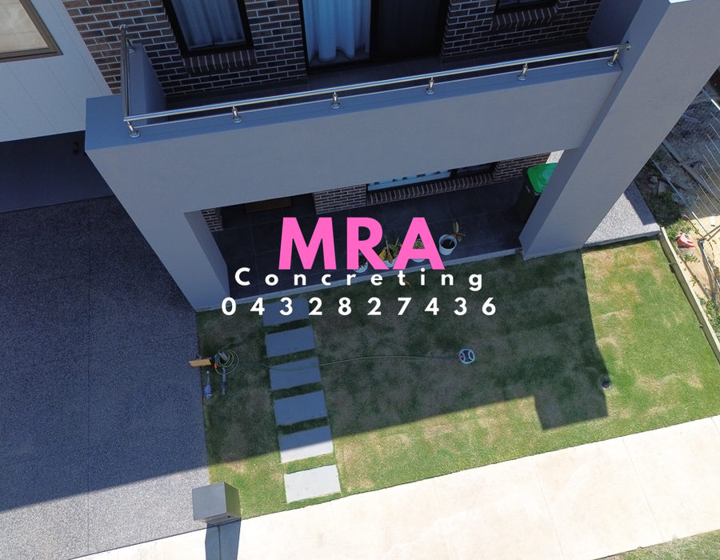

Exposed aggregate
Driveways, pathways and outdoor areas, including sample cuts, acid washing and sealing.
Built on family. Built to last.
From exposed aggregate and driveways to council works, landscaping and concrete repairs — prepared properly and finished with care.
The MRA standard
The finish is what people see. The preparation underneath is what makes it last.
MRA is a small, family-run business spanning two generations. From planning, levels and drainage through to reinforcement, placement and the final finish, the work is completed by the MRA team.
No shortcuts. No rushed decisions. Just experienced concreting and old-school workmanship.
From foundation to finish.
Two generations of concreting experience.
Crushed rock, reinforcement, levels and drainage.
Care through placement, cutting, washing and sealing.
From the first measure through to the finished work.
Our services
MRA completes residential and council concrete work, including preparation, placement, finishing and aftercare.
Driveways, pathways and outdoor areas, including sample cuts, acid washing and sealing.
Practical concrete for driveways, backyards, footpaths, foundations and slabs.
Decorative concrete finishes for outdoor surfaces, paths and entertaining areas.
Council works, permits and communication handled directly with the relevant council.
Concrete retaining walls, strip footings, steps and edge-beam construction.
Opening, excavation, concrete removal, site levels and preparation.
High-pressure washing, acid washing and resealing of concrete surfaces.
Site levels, turf installation and concrete integrated into outdoor spaces.
Concrete finishes
MRA can provide standard and custom exposed aggregate mixes. Always view physical samples, as natural materials and screens can alter colour.


Clean, hard-wearing and versatile.

Patterned decorative concrete.
Selected work
Every image below comes from MRA Concreting's completed work.





Council works
MRA undertakes council repairs in many areas of Victoria and handles the required permit process. Work includes nature-strip reinstatement, crossover removal and extensions, footpath bay repairs, and kerb and channel repairs.
Discuss council work →Free measure and quote
For urgent enquiries, call Amanda directly. You can also send an email with the location, type of work and any project details.